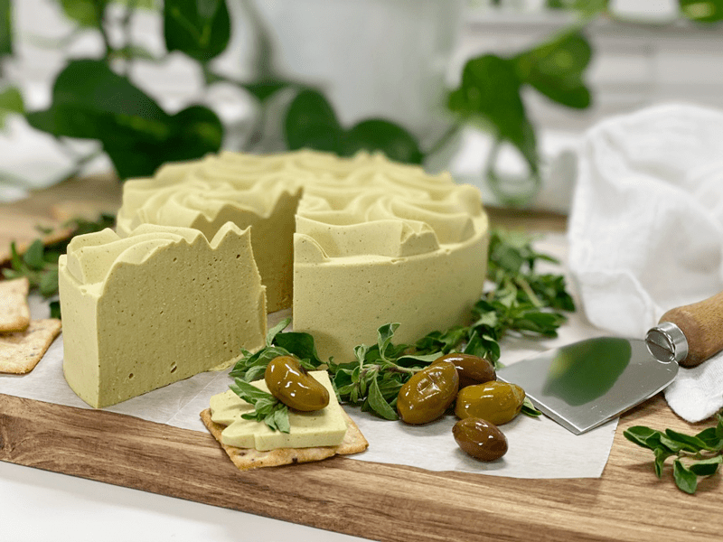
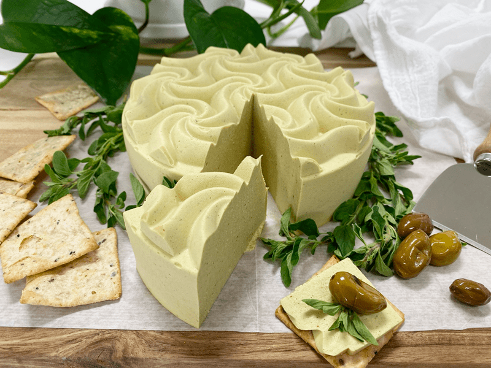

Sweet and Spicy Mustard Cheese | Vegan | Nut-Free |Oil-Free
Sweet and Spicy Mustard Cheese
Do you ever have one of those days where everything is a little fechatted? I sort of had one of those days in the kitchen, but in the end, it was to my benefit. My mind was clear on the cheese recipe that I wanted to create. I was thinking about all my nut-free friends (though I think they’re all a little nuts) and found that I had a fresh homemade jar of Raw Sweet & Spicy Mustard in the fridge.

I got the sunflower seeds soaking, and as the time neared to begin, I put my mise n place together. Usually, I just set out all the spices that I intend to use along with the rest of the ingredients. But today, I veered from the norm and decided to grab a small glass bowl and combine all my measured out spices and nutritional yeast.
So when the time was right to add them into the blender, it was just going to be one quick “swoosh.” Everything was ready… I grabbed my bowl of soaking sunflower seeds and hit the edge on the counter and sprayed the counter with water and sunflower seeds. Oy-vey! After declaring it a national disaster, I cleaned up the mess. Thank goodness they only showered the counter and not the floor, so I scooped them up and rinsed them off thoroughly.
So in the blender went the sunflower seeds, water, lemon juice, mustard, vinegar, and agave. (note, I didn’t mention spices or nutritional yeast) I spent about a minute, blending it to a thick creamy sauce. I taste-tested. Hmmm, I couldn’t taste the seasoning (duh)… so I added more. I taste-tested it, and it was pretty good. I then tipped over the apple cider vinegar bottle.

In haste to prevent it from spilling all over, I darted for it, which made the issue worse because I now sprayed the cabinets. Pew! I had used all my “national disaster” tokens, so I was left alone to clean up this mess. Once finished, I turned around, smoothed my hair back, straightened my shirt, shook my head, and acted as though nothing had happened out of the ordinary. I looked down and saw my little glass bowl holding all of my spices and nutritional yeast. Without a second thought, I smiled at the fact that I had forgotten to add them to my sauce, so what did I do… I dumped them in the blender. THEN it hit me. Because I broke my routine, I managed to double all my spices and nutritional yeast!
With all the events that had already taken place, I figured there was nothing left to do but blend it up and test it. Sigh. I hate losing ingredients. Sigh. Blend. Sigh. Grabs spoon. Sigh. Takes a taste test…SIGH… what… wait….its perfect! Lol, Welcome to the little world of Amie Sue.
 Ingredients:
Ingredients:
Cheese base:
- 2 cups (256 g) raw sunflower seeds, soaked
- 1 1/2 (320 g) cup water
- 2 1/2 Tbsp (25 g) lemon juice
- 3 Tbsp (38 g) raw Sweet & Spicy Mustard
- 1 Tbsp (13 g) raw apple cider vinegar
- 1 Tbsp (20 g) maple syrup
- 1/4 cup (30 g) nutritional yeast
- 1-2 tsp (6-12 g) Himalayan pink salt (I used 2)
- 1 tsp (3 g) onion granules or powder
- 1 tsp (2 g) garlic powder
- 1 tsp (4 g) ground cumin
- 1/2 tsp (1 g) turmeric
Agar gel:
Preparation:
Cheese base:
- After soaking the sunflower seeds, drain and rinse them. Place in a high-powered blender.
- Add 1 1/2 cup water, lemon juice, mustard, vinegar, agave, nutritional yeast, salt, onion granules, garlic powder, cumin, and turmeric. Blend until creamy; it will be thick. If you have a Vitamix with a plunger, use that to keep the mixture moving. Otherwise, stop your machine occasionally to scrape the sides down.
- Test for grittiness by rubbing it between your thumb and finger. If you feel grit, keep blending.
Agar gel:
- Once the cheese mixture is ready, it is time to make the agar gel. In a small saucepan, bring 1 cup of water to a light boil, add the agar. Stir continuously until the agar had dissolved – this can take several minutes. Keep whisking! If it gels up in the pan, return to heat and melt it down again.
- Start the blender and get a vortex going with the mixture. Drizzle in the agar gel and blend until combined. You will need to stay focused and move fairly quickly. Agar will start to set up as it cools.
- Pour into mold and then place in the fridge, uncovered, for at least 30 minutes. Eat sliced or shred!
- Note ~ I don’t use anything to prepare my molds to help them release once it has set. It is good about just popping out.
- Keep in the fridge for up to 5 days.
© AmieSue.com